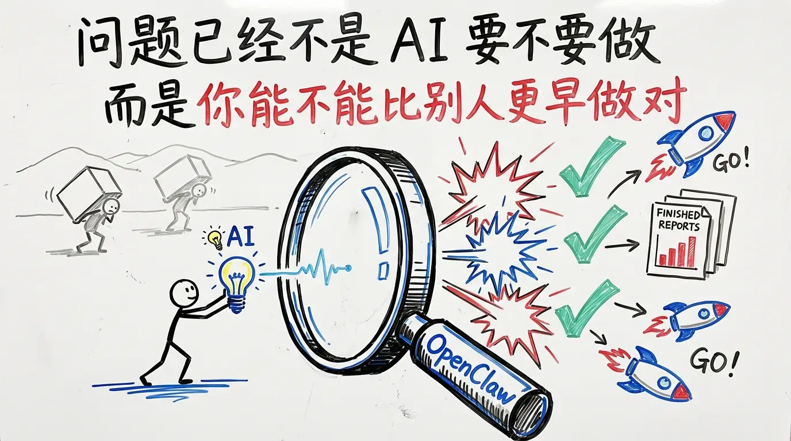
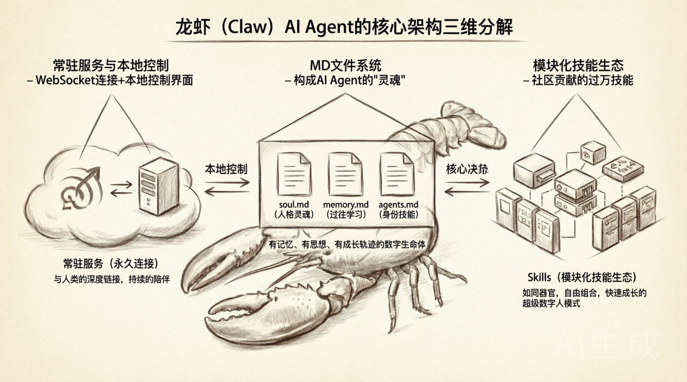
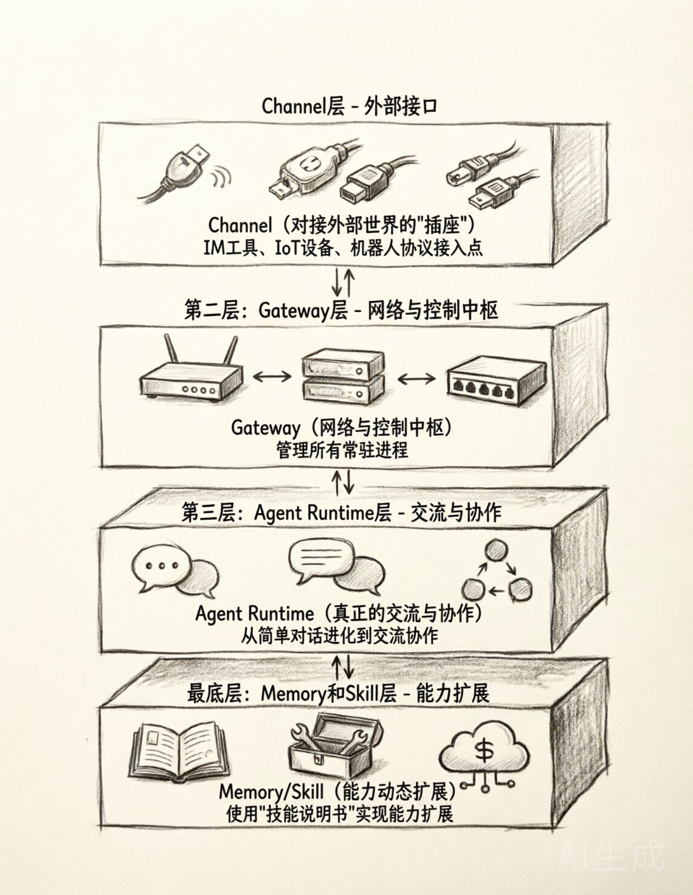
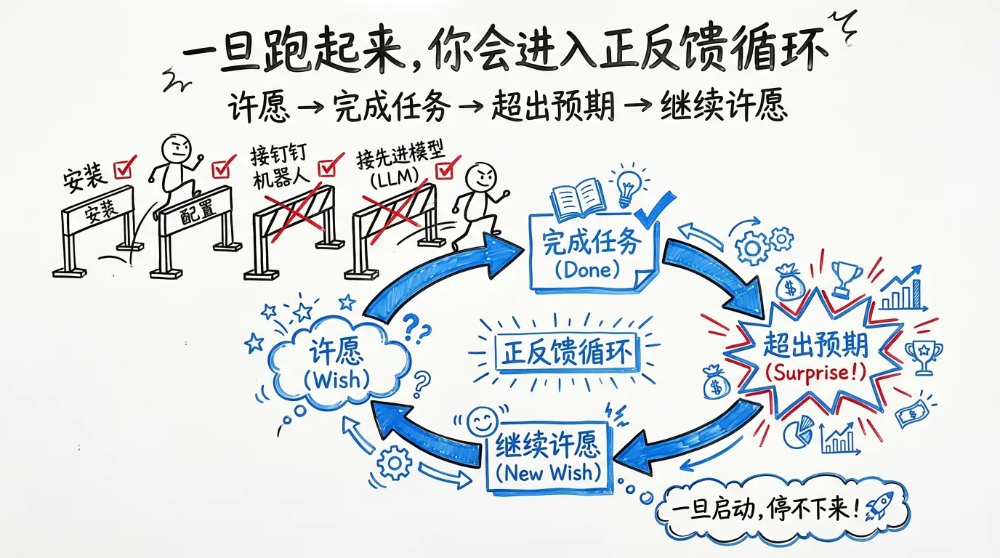
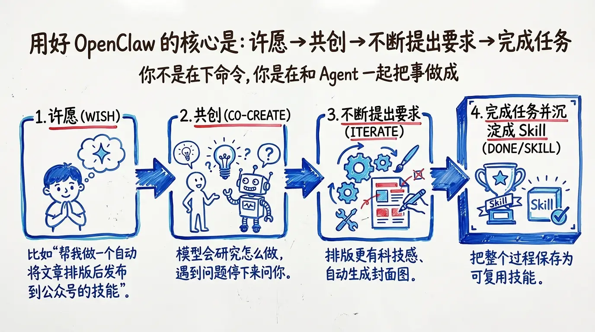
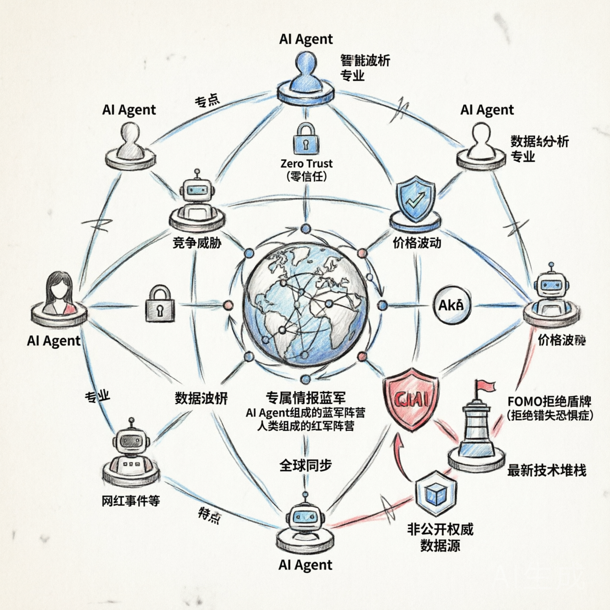

在人类与机器的漫长对话中，总有一些瞬间，像一道闪电划破长空，让我们猛然惊觉——时代真的变了。2026年初，一场名为“龙虾”的风暴，正用它那看似笨拙却无比坚定的钳子，捅破了人工智能从“能说”到“能做”的最后一层窗户纸。这不仅是一个开源项目的故事，更是一曲关于AI进化的宏大寓言。

图3：为什么现在是AI时代的关键时刻
我们曾以为，互联网的终极形态是搜索，是信息的连接。而如今，AI的浪潮正将我们推向一个全新的纪元。我将其划分为五个阶段：
“龙虾”，正是这从青铜迈向白银的关键一跃。
一切始于2025年11月的一个普通周末。奥地利程序员Peter Steinberger，厌倦了度假时还要处理Mac上的工作，便随手写了一个名为clawbot的小工具。他未曾料到，这个为了解放自己双手的“小玩意儿”，竟点燃了全球开发者的热情。
仅仅一个月后，clawbot在开发者圈内火爆，GitHub点赞数迅速突破一万。2026年1月，项目迎来品牌重塑与更名风波。到了2月，它已超越Linux内核，登顶全球最火的开源项目。同月，OpenAI果断出手，将其收购。一条由个人灵感孵化的“龙虾”，就这样搅动了整个科技巨头的格局。
“龙虾”为何如此成功？让我们拆解它的核心架构，窥见其灵魂所在。

图1：龙虾（Claw）核心架构三维分解图
首先，是常驻服务与本地控制。它通过WebSocket建立永久连接，并提供一个本地控制界面，真正完成了与人类的深度链接，不再是临时的会话，而是持续的陪伴。
其次，是以MD文件为根基的“真人感”。soul.md 定义了它的人格与灵魂，memory.md 记录了它的过往与学习，agents.md 描述了它的身份与技能。这些简单的文本文件，构成了一个有记忆、有思想、有成长轨迹的数字生命体。
最后，是模块化的技能生态（Skills）。社区贡献的过万技能，如同一个个器官，可以自由组合。一个“龙虾”可以是文档专家，也可以是代码大神，或是数据分析员。这种快速成长的超级数字人模式，展现了无限的可能性。
Peter Steinberger的成功，绝非偶然。他精准地把握了设计AI产品的第一性原理：结果导向。他不是为了创造一个聊天机器人，而是为了解决一个具体的问题——如何让AI替我工作？
这带来了深刻的启示：
真人感至关重要。“龙虾”与传统ChatBot的最大区别在于主动性。它“玩了命”地要完成你的目标，常常带来惊喜。它问的不是“你还想聊什么？”，而是“这件事，我能为你做这几个方向的尝试，可以么？”
三大设计理念：
四层设计架构：

图2：龙虾（Claw）四层设计架构流程图 - Channel, Gateway, Agent Runtime, Memory/Skill

图5：AI时代带来的正向循环效应
“龙虾”的出现，正在重塑我们的工作与社会。
信息加工类的岗位首当其冲，典型的“中层危机”已然显现。工作的本质，正从单纯的技能交换，演变为“个体+智能体集群”的协同。一个“一人公司”配备多个专属Agent，即OPC（One Person Company），将成为可能。
更深远的影响在于交互方式的变革——许愿型交互。未来的人类，需要学会的不再是编程，而是“许愿”。清晰地表达你的愿望，剩下的就交给“龙虾”们去实现。技术在前方狂奔，安全在后方追赶，虽然当下存在一些隐患，但这些问题终将被解决。

图6：AI实践的方法论循环
理论终需付诸实践。你可以从阿里云的CoPaw平台开始你的探索之旅，参考其快速入门指南。也可以选择Kimi等成熟的AI助手，开通高级会员，深入体验。网上有无数的实践课程，等待你去发掘。
有趣的是，本次分享本身，就是“龙虾”理念的一次完美实践。从我输出OUTLINE.md梗概，到你根据梗概扩写内容，再到未来我们将配图、文案整合，做成一个可浏览的网站并生成音频演讲稿——这整个流程，正是“许愿-交付”模式的生动体现。

图4：专属情报蓝军 - 一个由AI Agent组成的数字防御网络概念艺术
我在构建一个小的众筹项目，大家可以很轻的支持和参与，有早鸟和股东福利；
龙虾钳已经张开，窗户纸已然破碎。一个由智能体驱动的新世界，正徐徐展开。”
扫码关注作者
扫码关注公众号